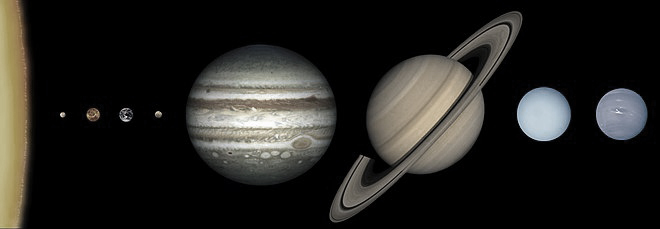

Планеты солничной системы
Солнечная система: дом, полный загадок.
Наша солнечная система - это удивительнрое место, где кипит жизнь,
вращаются планеты и таятся неразгаданные тайны. В её центре сияет
Солнце, огромная звезда, освещающая и согревающая все, что находится вокруг.

Вокруг Солнца врощаются 8 планет, каждая со своей индивидуальностью:
-
- Меркурий, самая маленькая и быстрая,
- Венера самая горячая планета, с расскаленной атмосферой,
- Земля, наш дом,
- Марс, красный и загадочный
- Юпитер, самый большой в нашей системе
- Сатурн имеет красивые кольца
- Уран ледяной гигант, ярко-бирюзовый
- Нептун, самый холодный и дальний
В Солнечной системе так же "живут" астероиды, кометы, спутники и карликовые планеты(такие как Плутон, Церера, Хуамэа, Макемаке и Эрида)
Изучение Солнечной системы - это путишествие в мир непостежимых загадок. Мы узнаем о происхождении жизни,
эволюции планет и о том, что такое космос. Каждый новый открытый объект - это шаг к более глубокому пониманию Вселенной.
Факты об Солнечной системе:
Факты!!!
- Солнце - это звезда, и составляет около 99,86% массы всей Солнечной системы. Оно излучает свет и тепло, которые поддерживают жизнь на Земле.
- Планета - гигант, Реальный гигант. Юпитер - самая крупная планета в системе, ее масса в 317 раз превышает массу Земли. У юпитера самый большой спутник - Ганимед, он больше Меркурия.
- Спутник. У планет есть множество спутников. Например, у Марса есть 2 меленьких не идеально круглых спутника - Фобос и Деймос. У Земли 1 спутник - Луна. У Газовых гигантов больше всего спутников.
- Плутон. Плутон ранее считался девятой планетой, но теперь классифицируется как Карликовая планета. Это связано с тем, что он не очищает свою арбиту от других объектов.
- Астероиды и кометы. В Солнечной системе так же находятся астероиды, большинство из которых сконцентрированы в Поясе Астероидов между Марсом и Юпитером. Кометы - это ледяные тела, которые обладают яркими хвостами, когда приблежаются к Солнцу.
- Солнечные ветры. Солнце излучает поток заряженых частиц, называемые солнечными ветрами, которые могут влиять на магнитное поле Земли и вызывать northern и southern lights(северное и южное сияние)
- Возраст Солнечной системы примерно 4,6 миллиарда лет из облака газа и пыли
В приделах Солнечной системы и за ней.
После Плутона в нашей Солничной системе находится несколько различных объектов и структур, Которые являются частью более удаленных областейю Вот основные из них:
-
- Пояс Койпера - это область, расположенная за орбитой Нептуна, в которой находится множестов малых ледяных тел, аналогичных Плутону. Объекты в поясе Койпера часто классифицируются как плутоиды(карликовые планеты) включая такие как:
- Эрис
- Хуамеа
- Макемаке
- Гипербола и облако Оорта. Далее за поясом Койпера может находиться облако Оорта - гепотетическая область, которая считается источником длиннопериодических комет. Облако Оорта представляет
собой лгромное облако ледяных тел, которые окружают Солнечную систему на расстоянии 100 000 астрономических едениц(AU) или более. Оно разделяется на:
- Внешнее облако Оорта. Считается, что это огромное, шарообразное облако находится на расстоянии до 100 000 AU от Солнца
- Внутреннее облако Оорта. Более близкая к Солнцу область, Находящая на расстоянии от 2000 до 5000 AU
- Солнечная граница. На расстоянии 120-150 AU находится зона, известная как гелиосфера. Это область, в которой Солнечное магнитное поле и солнечные ветра оказывают влияние на окружающее пространство.
Границу гелиосферы еще называют ГЕЛИОПАУЗА.
- Межзвездное пространство. Всё, что находится за пределами Солничной системы, включает в себя:
- Межзвездные облака. Газ и пыль, которые заполняют заполняют пространство меж звездами в галактике.
- Звезды и звездные системы. Существует множество других звезд, планет и астрономические объектов, которые находятся долеко за пределами Солнечной системы.
Малоизвестные факты об Солнечной системе:
- Венера вращается в обратном направлении. В то время как большинство планет вращаются вокруг Солнца в том же направлении, в котором они вращаются вокруг своей оси, Венера вращается в обратном направлении.
- Сатурн не единственная планета с кольцами. Хотя кольца Сатурна наиболее известны, Юпитер, Уран и Нептун тоже обладают кольцами, просто они гораздо менее заметны и состоят из пыли и льда.
- На Юпитере идет дождь из алмазов. Благодаря высокому давлению и температуре в атмосфере Юпитера, углерод кристаллизуется, образуя алмазы. Представьте себе бриллиантовый дождь!
- У Солнца есть своя атмосфера. Это называется короной, и она простирается на миллионы километров. Во время солнечного затмения ее можно увидеть как светящийся ореол вокруг Солнца.
- На Марсе есть самая высокая гора в Солнечной системе. Олимп - потухший вулкан, высотой в три раза больше Эвереста.
- Солнце состоит в основном из водорода и гелия. Эти два элемента составляют 99,9% массы Солнца.
- У Луны есть свои землетрясения. Их называют лунотрясениями, и они вызваны гравитационным воздействием Земли.
О поясе астероидов!
В поясе астероидов есть много чего интересного!
Факты!
- Не все астероиды одинаковы. В поясе астероидов представлены различные типы астероидов: каменистые, металлические, углеродные.
- Пояс не является плотным. Расстояние между астероидами огромно. Если бы вы путешествовали через пояс астероидов, вы бы не столкнулись с ними.
- Считается, что пояс астероидов не образовал планету. Гравитация Юпитера нарушила формирование планеты из астероидов, оставив вместо нее огромное поле осколков.
- В поясе есть и карликовая планета. Церера - это самая большая карликовая планета в поясе астероидов.
- Астероиды могут представлять опасность. Хотя столкновения с Землей редки, они могут иметь катастрофические последствия.
Отойдем за пределы нашей системы. Наша галактика, известная как Млечный Путь, является одним из самых удивительных объектов во Вселенной. Вот несколько фактов о ней:
- Размеры и форма. Млечный Путь - это спиральная галактика с диаметром примерно 100 000 световых лет. Её форма напоминает плоский диск с закручеными спиральными рукавами.
- Звезды и планеты. В нашей галактике насчитывается от 100 до 400 миллиардов звезд, и, согласно совместнным теориям, большинство из них может иметь свои планеты.
- Центр галактики. В центре Млечного Пути распологается сверхмассивная черная дыра известная как Стрелец А*. Она имеет массу около 4 миллионов солнечных масс и оказывает гравитационное влияние на звезды и газ вокруг нее.
- Движение. Наша Солнечная система движется со скоростью 230 км в секунду, а полный оборот вокруг центра галактики занимает примерно 225-250 миллионов лет.
- Соседние галактики. Ближайшие крупные галактики к Млечному Пути - это Андрамеда и Треугольник. Андромеда согласна прогнозам, через 4,5 миллиарда лет может столкнуться с Млечным Путем.
- Галактические рукава. В Млечном Пути выделяют несколько спиральных рукавов, включая рукав Ориона, где находится наша Солнечная система.
- Темная материя. Ииследования показывают, что около 85% всей массы галактики состоит из темной материи, которая не испускает свет и не может быть непосредственно обнаружена.
- Звездные скопления. В Млечном пути есть множество звездных скоплений, как открытыъБсостоящих из молодых звезд) так и шаровых(состоящая из старых звезд).
- Возраст галактики. Млечный Путь имеет возраст около 14.6 миллиардов лет, что делает его практически таким же старым, как сама Вселенная.
- Сложная структура. Галактика состоит не только из звезд и планет, но и из межзвездного газа и пыли, которые играют важную роль в образовании других небесных тел.
Эти факты подчеркивают сложность и величие нашей галактики, которая продолжает оставаться объектом исследования и открытий.
Больше о нашей галактике!